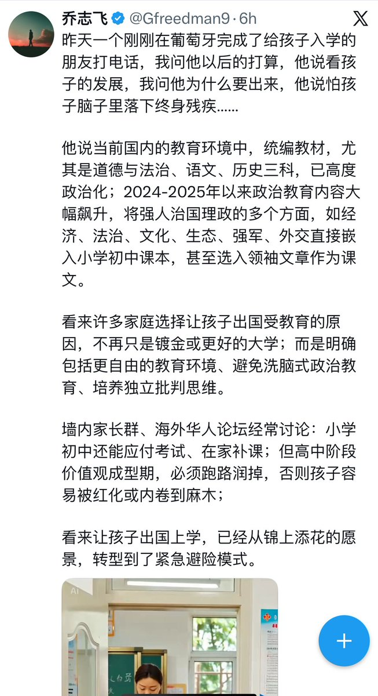

The Raven in the Rain🏳️🌈
@Raincandy_1937
喜歡的漫畫裡，主角說過，如果選擇用雙手祈禱的話，那就無法握劍了。
可是在這個鋸斷我們雙手的國家，去祈禱，不妥協，依然是和劍鋒一樣銳利的反抗

Leva
@BingLiu34173809
未来几十年，中国执政党的统治地位将会非常稳固。
原因之一是老龄化，另一个原因，是教育。
现在在信访局门口打地铺的，你们看看，有35岁以下的吗？
在近二十年的教育体系中，存在一种极少被正面讨论、却长期被默许的伤害—— 制度性人格剥夺。 https://t.co/ZD5EOQkSYE